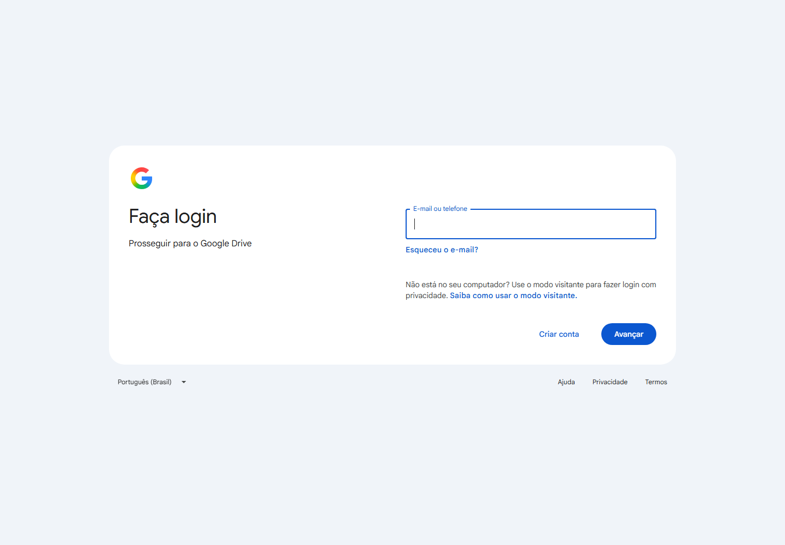

ProjetoEspaço Saúde Jéssica Drey
LocalBelo Horizonte · MG
UsoReferência para conteúdo, posicionamento e melhoria visual

Registro visual do material encontrado para o Espaço Saúde Jéssica Drey antes da construção da nova página.
